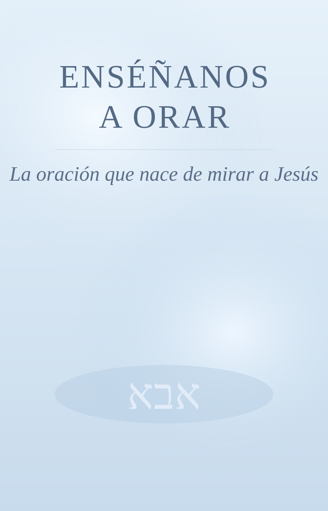

Edición impresa
312 páginasEnséñanos a orar
Comprar ahora
Libro de espiritualidad
Convirtiendo cada momento de oración en un encuentro con Jesús.
Una propuesta clara y profunda para aprender a orar en lo cotidiano, contemplar el Evangelio y dejar que Dios transforme tu corazón.
Comprar ahora
Una invitación a reaprender a hablar con Dios desde el corazón de Jesús.
Enséñanos a orar no es un manual de técnicas, sino un camino interior. Recorre el Padre Nuestro como escuela del alma: identidad antes que petición, confianza antes que control, presencia antes que discurso.
Identidad restaurada
Del “Señor, enséñanos a orar” al “Padre nuestro”: orar deja de ser obligación y se vuelve pertenencia.
Padre Nuestro, frase por frase
Santificado sea tu nombre, venga tu reino, hágase tu voluntad: una pedagogía concreta para ordenar el corazón.
La oración en lo secreto
Entrar en el cuarto, cerrar la puerta y quedarse. Menos fórmula, más presencia real delante del Padre que ve.
“Jesús no vino a enseñarnos a hablar mejor: vino a restaurar la relación. Por eso, cuando enseña a orar, comienza con una palabra que lo cambia todo: Padre.”
Prólogo — La oración que nace de mirar a JesúsEnséñanos a orar
Recibe novedades, recursos y acceso prioritario a la preventa. También puedes escribir para acompañamiento y orientación.
info@godlens.one · @godlens.one · godlens.one
Ya disponible
Empieza hoy tu camino
Enséñanos a orar ya está a la venta y puede ser tu guía para volver al Padre desde lo secreto, con verdad y profundidad.
Índice y recorrido del libro
Parte I · Cuando la oración se volvió personal
- Cap. 1 · Señor, enséñanos a orar
- Cap. 2 · ¿Siempre se oró así?
- Cap. 3 · Abba
Parte II · El Padre Nuestro: una escuela del alma
- Cap. 4 · Padre nuestro
- Cap. 5 · Santificado sea tu nombre
- Cap. 6 · Venga tu reino
- Cap. 7 · Hágase tu voluntad
- Cap. 8 · Danos hoy el pan de cada día
- Cap. 9 · Perdónanos…
- Cap. 10 · No nos dejes caer en tentación
- Cap. 11 · Porque tuyo es el reino
- Cap. 12 · Amén
Parte III · La oración en lo secreto
- Cap. 13 · Entra en tu cuarto, cierra la puerta
- Cap. 14 · El Padre que ve cuando nadie mira
- Cap. 15 · Dos formas de acercarse a Dios
- Cap. 16 · Cuando ya no sabemos qué decir
- Epílogo · Volver al Padre
Nota legal
Este libro es un recurso espiritual y de reflexión personal. No reemplaza terapia psicológica, tratamiento médico ni acompañamiento profesional. Si estás atravesando una situación de riesgo, busca ayuda inmediata con profesionales de salud, referentes pastorales responsables o servicios de emergencia de tu país.